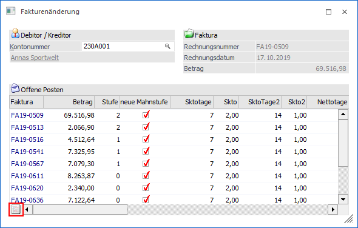
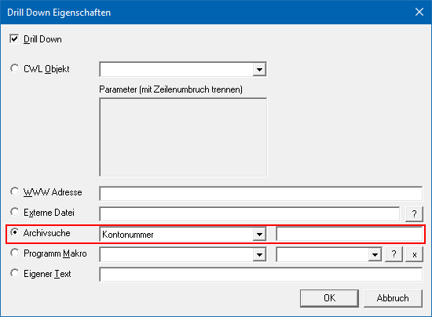

Die archivierten Dokumente können über viele verschiedene Wege aufgerufen bzw. angezeigt werden:
ü Archivsuche
Die Anzeige der
Archiveinträge kann auch über eine "manuelle" Archivsuche erfolgen. Hierfür
stehen die Programme Archiv-Suche,
Archiveintrag suchen und Archiv Schnellsuche zur Verfügung.
ü WinLine INFO (Konten, Artikel
etc.)
Im Bereich "Archiv" werden alle Archiveinträge, bezogen auf das
ausgewählte Objekt, angezeigt. Die Ermittlung der Archiveinträge erfolgt hierbei
automatisch über die Beschlagwortung.
ü Stammdaten (Sachkonten,
Personenkonten, Artikel)
Nach Anwahl des Buttons "xxxinfo" kann in dem
aufgehenden Fenstern in das Register "Archiv" gewechselt werden. Hier stehen
alle Archiveinträge, bezogen auf das ausgewählte Objekt, zur Verfügung. Die
Ermittlung der Archiveinträge erfolgt automatisch über die Beschlagwortung.
ü Weitere WinLine
Programme
Bestimmte Programmteile der FIBU und FAKT greifen automatisch auf
das Archiv zu, um Details zu Datensätzen (z.B. Fakturen) anzuzeigen (z.B. die
Fakturenänderung).
Beispiel

ü Formular Editor -
DrillDown
Innerhalb eines WinLine Formulars wird ein DrillDown des Typs
"Archiv Suche" implementiert, welches die Archivsuche ansprechen kann. Hierfür
wird zuerst aus der Auswahlbox die Beschlagwortung ausgewählt, nach welcher die
Archiv-Suche durchgeführt werden soll. Dadurch wird dann eine Archiv-Suche mit
der ausgewählten Variable und dem Schlagwort durchgeführt. Wird neben der
Beschlagwortung auch noch ein Wert im 2. Eingabefeld eingetragen (feste Werte
oder Variablen), dann wird die Suche nach dem Schlagwort mit diesem Wert
vorgenommen.
Beispiel
